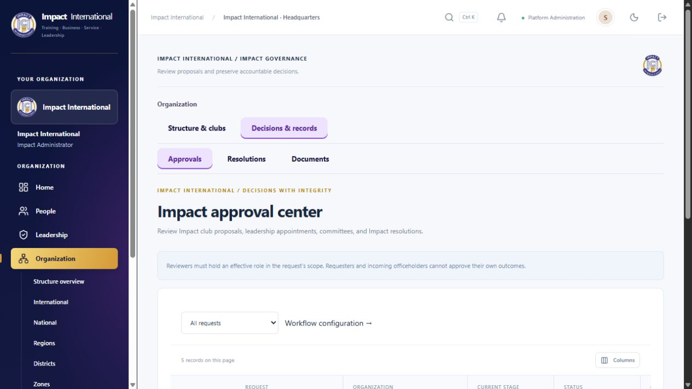

Coverage
798 page observations, 826 recorded checks, and 12 accounts. Platform Admin covered 146 distinct observed URLs, including query-selected tools and detail pages. All discovered navigation queues completed for the roles listed below.
This is broad page, option and selected-workflow coverage. It is not an exhaustive pass of every button or every lifecycle state. Historical failed observations are preserved with their classifications.
- Platform Admin: 327 page observations
- International President: 47 page observations
- National President: 47 page observations
- Regional President: 47 page observations
- District President: 47 page observations
- Zonal President: 47 page observations
- Club President: 85 page observations
- Member Club 1: 31 page observations
- Member Club 2: 30 page observations
- Member Another Zone: 30 page observations
- Member Another District: 30 page observations
- Member Another Region: 30 page observations
Completed workflows and options
- Member wizard: required-name validation, National → Region → District → Zone → Club cascade, draft save, review and final submission. Created fictional member IM-000003167; saved profile showed the supplied email and Hyderabad location.
- All seven membership status views; 13 member profile tabs; five club workspace tabs; nine event workspace tabs; five calendar modes.
- Hierarchy create forms for National, Region, District, Zone and Club, invitation form, appointment wizard and profile editor opened and inspected, then canceled.
- Finance: all hierarchy filter levels, Overview/Dues/Records/Reports, invoices/collections/expenses/payments registers, CSV download, 11 dues sections and all 25 dues report types.
- Communications: inbox, channel, outreach and management tools. Operations, ID-card and Intelligence tools; dashboard and analytics section navigation.
- Task creation and completion persisted for the fictional “Platform Admin browser recheck 20261114” task.
- Global search: all 12 resource-type choices exercised.
- Mobile: menu opened and closed; Members, Events, Finance, Leadership and Organization checked at 390 × 844 without page overflow. Temporary viewport override reset.
Finding fixed
The approval center was accessible to a president through page links but lacked its selected Organization menu entry. The menu permission list now matches the server’s existing governance access rules. This only corrects navigation visibility; it does not grant new server permissions. International President browser retest passed, and subsequent president/member navigation completed.

Follow-up and limits
A compound assertion for email retention and two address rows returned false. The final review and saved profile confirmed the email and entered address, but this run did not independently confirm two populated addresses persisting. That check remains unconfirmed; it is not reported as passed.
The first 19 page observations ran before lazy content loaded. They were repeated after waiting for headings and passed. One navigation-style assertion exposed the missing selected entry above and was retested after the fix. A browser connection timeout interrupted the first Club President attempt; the connection recovered and the role was rerun with per-page evidence saves.
External SES/WhatsApp/SMS delivery, security changes, irreversible deletion, real payments, future-event attendance/certificates and mass ID-card issuance were not executed. Not every inspected editor was submitted. The five ordinary member accounts and president passes verify navigation/access; they do not repeat all Platform Admin write workflows.